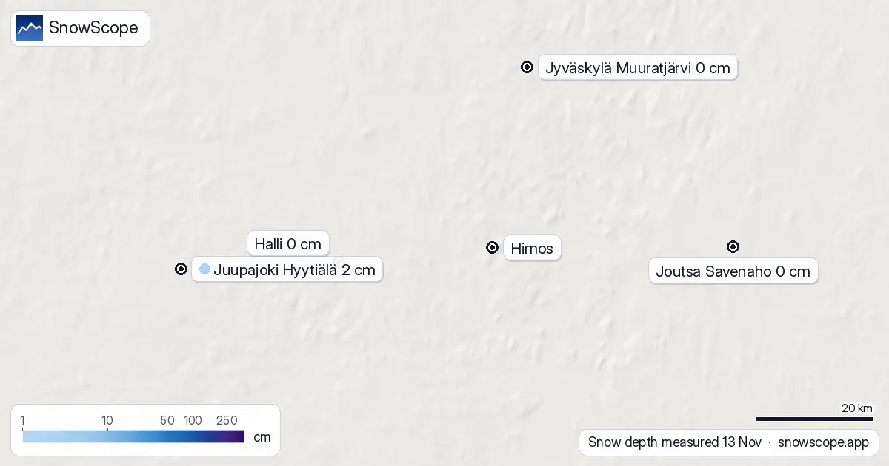

Snö i Himos: 0 cm i skogen, en förstasnöslinga på sparad snö (14 november 2026)
Södra Finland har ingen natursnö att tala om. På morgonen den 13 november mätte väderstationerna runt Himos 0 cm vid Halli flygplats (143 m, 26 km bort), 0 cm i Jyväskylä Muuratjärvi och Joutsa, och 2 cm i Hyytiälä, längre västerut. Ändå öppnar Himos något i helgen: en förstasnöslinga för längdåkning den 14 november, byggd av snö som anläggningen själv tar fram och inte av veckans snöfall. Backarna har ännu inget öppningsdatum.
Se snöprognosen för Hiihtokeskus Himosvuori live i SnowScope-appenSnödjup, pudervarningar och 3D-kartan, gratis.
Slingan, inte backen
På Himos sida med öppettider står det att starten på backsäsongen beror på vädret och att datumet meddelas när det är bekräftat. Längdslingan är en annan sak: den läggs med preparerad snö, och därför kan den öppna medan skogen runt omkring är brun.
Vi uppskattar nysnön de senaste sju dagarna till ungefär 2 till 3 cm, och den har inte blivit liggande.

I veckan: mer regn än snö
Vi räknar med ungefär 2 till 3 cm snö de kommande sju dagarna. De andra prognoserna vi kollar ger mellan 4 och 30 cm på toppen av backen, ett mycket brett spann, och de är överens om att mer än hälften av nederbörden i dalen kommer som regn. Snögränsen ligger runt 220 m, nästan lika högt som toppen (230 m). Räkna med blötsnö och regn, med snö bara under de kallare timmarna.
Det normala i Jämsä
Våra 46 tidigare vintrar ger Himos ett normalt natursnödjup på 2 cm den 14 november och 8 cm den 30 november; 39 % av vintrarna har ingen snö den 14 november. I dalen byggs snötäcket oftast upp först i december, till 16 cm den 15 december. En normal vinter når max 54 cm.
Antalet snödagar har minskat: 160 en normal vinter bland de första 15, 139 bland de senaste 15. Förra vintern hade bara 84.
När du ska åka
För åkning i backen får du vänta på att anläggningen meddelar öppningsdatum. För längdåkning just nu är förstasnöslingan det enda riktiga alternativet i trakten.
Tips för skidåkare
- Förstasnöslingor är korta: räkna med varv, inte en tur.
- Regn på frusen mark gör parkeringar och gångvägar väldigt hala på morgonen.
- Håll koll på himos.fi för öppningsdatum; det hänger på en rad kalla nätter för snötillverkning.
Fler kartor (externa webbplatser)
Referenser och källor
- Meteorologiska institutet (Finland), öppna data (CC BY 4.0) en.ilmatieteenlaitos.fi/open-data
- Himos, öppettider (officiell), läst 2026-11-13 himos.fi/aukioloajat/
Om siffrorna
Uppmätt snö: morgonavläsningar den 13 november 2026 vid de officiella väderstationerna i Sverige (SMHI öppna data), Finland (FMI öppna data, CC BY 4.0) och Norge (MET Norways stationsrapporter, CC BY 4.0, publicerade av Ogimet). Norges nationella snökarta seNorge (NVE och MET Norway, NLOD) ger uppskattningarna på ett rutnät om 1 km för backarna. Våra siffror: SnowScopes prognos för de kommande sju dagarna på tre höjder i skidområdet, jämförd med oberoende prognoser (ECMWF, ICON, GFS, GEM) för 14 till 20 november; snöhistorik för 46 tidigare vintrar (1980-81 till 2025-26), en modell av det förflutna korrigerad för höjd. Öppningsdatum: anläggningarnas egna sidor, lästa den 13 november 2026. Pistlängd och antal liftar: kartläggning i OpenSkiMap.
Officiella lavinprognoser: EAWS – European Avalanche Warning Services
Citera den här rapporten
För forskning, undervisning eller press: siffrorna och diagrammen får återanvändas fritt under CC BY 4.0 med den här källhänvisningen.
SnowScope (2026), Snö i Himos: 0 cm i skogen, en förstasnöslinga på sparad snö (14 november 2026), https://snowscope.app/blog/sv/2026/11/himos-snow-14-november-2026.html, hämtad 2026-11-14
SnowScope (Atlas Labs). (2026, November 14). Snö i Himos: 0 cm i skogen, en förstasnöslinga på sparad snö (14 november 2026). SnowScope snow reports. https://snowscope.app/blog/sv/2026/11/himos-snow-14-november-2026.html
BibTeX
@misc{snowscope2026himossnow14november2026,
author = {{SnowScope (Atlas Labs)}},
title = {Snö i Himos: 0 cm i skogen, en förstasnöslinga på sparad snö (14 november 2026)},
year = {2026},
month = nov,
howpublished = {\url{https://snowscope.app/blog/sv/2026/11/himos-snow-14-november-2026.html}},
note = {Published 2026-11-15 09:34 UTC; accessed 2026-11-14}
}· CC BY 4.0 · Metoder, data och verktyg →
Hiihtokeskus Himosvuori: snö och temperatur efter höjd, i vinter jämfört med förra (verktyg) →
Följ Hiihtokeskus Himosvuori
Gratis: ett meddelande när nysnö är på väg, och prognosen varje morgon.
Fler snörapporter

Guide till huskyturer och hundar i Rovaniemi vintern 2026-27: väderstationerna mätte 7 till 8 cm den 13 november, stadens första skidspår har öppnat, tre huskygårdar som Visit Rovaniemi listar med datum och priser, dagsljus och reglerna för din egen hund.

Guide till hundspann i Røros vintern 2026-27: runt 5 till 6 cm snö enligt Norges nationella snökarta, kennlar som Destination Røros listar med priser, hundspannsloppet Femundløpet i februari 2027 och reglerna för din egen hund nära tamrenar.

Guide till hundspann i Kiruna vintern 2026-27: väderstationen i Kiruna mätte 0 cm snö den 13 november, arrangörer som Kiruna Lappland listar med säsong och priser, korta dagar och reglerna för din egen hund i skidspår, renbetesland och Abisko nationalpark.